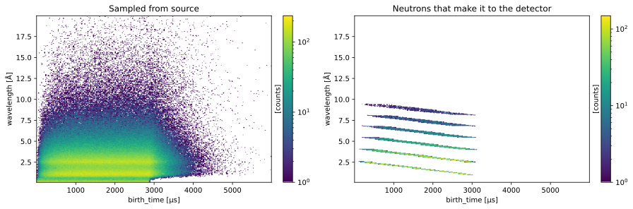
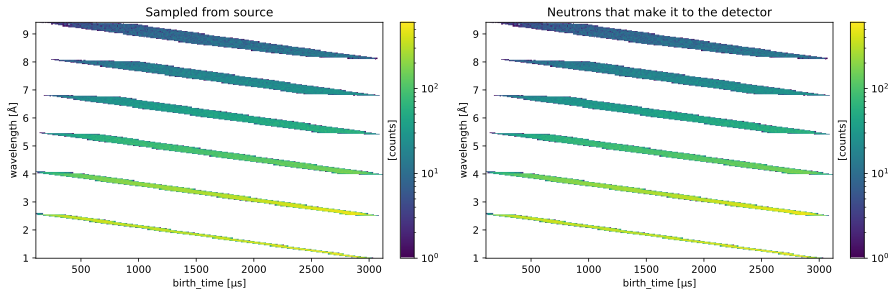
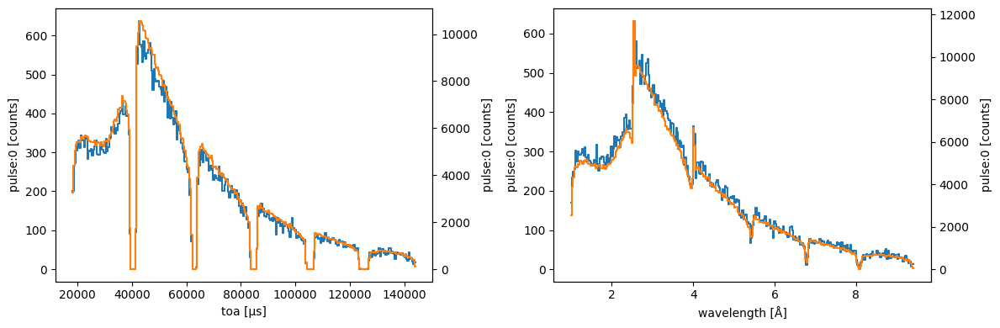
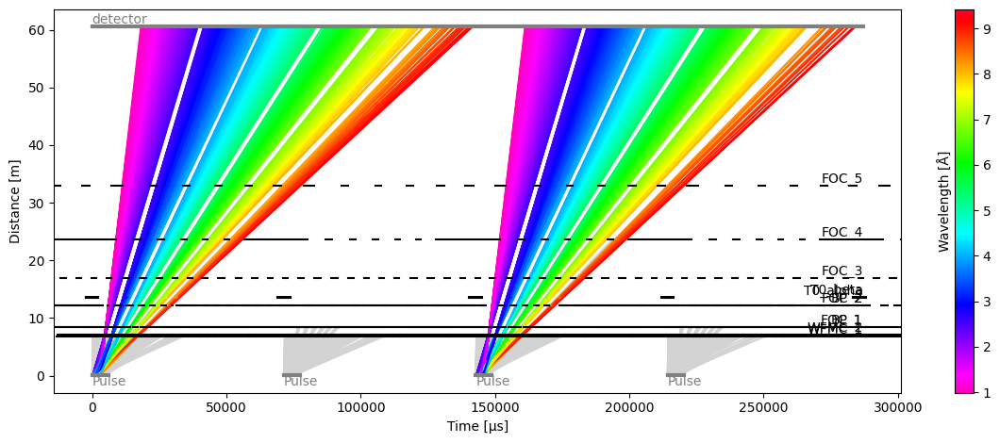
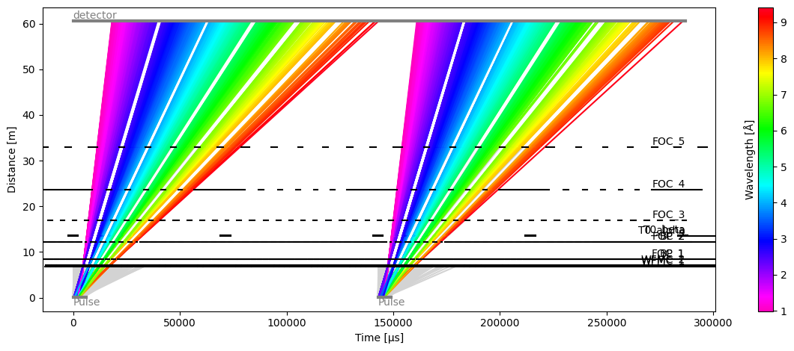

Optimizations#
Optimize for a given chopper cascade#
Most times when we run a tof model, the vast majority of neutrons in a pulse get blocked by the first few choppers in the beam path.
For example, using the chopper settings for the Odin (ESS) instrument:
[1]:
import scipp as sc
import matplotlib.pyplot as plt
import tof
[2]:
s1 = tof.Source(facility="ess", neutrons=1_000_000)
beamline = tof.facilities.ess.odin(pulse_skipping=True)
m1 = tof.Model(source=s1, **beamline)
r1 = m1.run()
r1
[2]:
Result:
Source: 1 pulses, 1000000 neutrons per pulse.
Choppers:
WFMC_1: visible=91514, blocked=908486
WFMC_2: visible=66673, blocked=24841
FOC_1: visible=64035, blocked=2638
BP_1: visible=64030, blocked=5
FOC_2: visible=60696, blocked=3334
BP_2: visible=60696, blocked=0
T0_alpha: visible=60696, blocked=0
T0_beta: visible=60696, blocked=0
FOC_3: visible=59215, blocked=1481
FOC_4: visible=58280, blocked=935
FOC_5: visible=57005, blocked=1275
Detectors:
detector: visible=57005
We can see that out of 1M neutrons that left the source, over 900K were blocked by the first chopper. In the end, only ~57K make it to the detector.
This is incredibly wasteful in both memory and compute.
We can however use the information of the opening and closing times of the choppers to predict which parts of the pulse (in the birth_time/wavelength space) will make it through and which regions will be blocked. This is otherwise known as a ‘chopper acceptance diagram’.
This can be visualized by looking at the birth times and wavelengths of the neutrons that made it to the detector, and compare that to the original distribution of neutrons in the source.
[3]:
fig1 = s1.data.hist(wavelength=300, birth_time=300).plot(norm='log', title="Sampled from source")
fig2 = r1['detector'].data.hist(wavelength=300, birth_time=300).plot(norm='log', title="Neutrons that make it to the detector")
fig1 + fig2
[3]:

The source has an in-built method to apply the chopper acceptance criteria during the sampling of neutrons; it is activated via the optimize_for argument. It expects a list of choppers, and only neutrons that would make it through all choppers end up in the source.
[4]:
# Filter out choppers from list of Odin components
choppers = {comp.name: comp for comp in beamline['components'] if isinstance(comp, tof.Chopper)}
# Create optimized source
s2 = tof.Source(facility="ess", neutrons=1_000_000, optimize_for=choppers)
m2 = tof.Model(source=s2, **beamline)
r2 = m2.run()
r2
[4]:
Result:
Source: 1 pulses, 1000000 neutrons per pulse.
Choppers:
WFMC_1: visible=1000000, blocked=0
WFMC_2: visible=1000000, blocked=0
FOC_1: visible=1000000, blocked=0
BP_1: visible=1000000, blocked=0
FOC_2: visible=1000000, blocked=0
BP_2: visible=1000000, blocked=0
T0_alpha: visible=1000000, blocked=0
T0_beta: visible=1000000, blocked=0
FOC_3: visible=1000000, blocked=0
FOC_4: visible=1000000, blocked=0
FOC_5: visible=1000000, blocked=0
Detectors:
detector: visible=1000000
We can now see that all 1M neutrons make to the detector, and plotting the birth time/wavelength distribution illustrates the optimization:
[5]:
fig1 = s2.data.hist(wavelength=300, birth_time=300).plot(norm='log', title="Sampled from source")
fig2 = r2['detector'].data.hist(wavelength=300, birth_time=300).plot(norm='log', title="Neutrons that make it to the detector")
fig1 + fig2
[5]:

It is also clear that the signal recorded at detector is much less noisy due to the improved statistics. It is also important to note that the overall shape of the data (relative intensities) was not changed by the optimization.
[6]:
fig, ax = plt.subplots(1, 2, figsize=(12, 4))
r1['detector'].toa.plot(ax=ax[0])
r2['detector'].toa.plot(color='C1', ax=ax[0].twinx())
r1['detector'].wavelength.plot(ax=ax[1])
r2['detector'].wavelength.plot(color='C1', ax=ax[1].twinx())
fig.tight_layout()

Pulse skipping#
Some instruments (such as Odin) use a pulse skipping chopper to ‘skip’ every other pulse, thus allowing to record a wider wavelength range at the detector without having issues where neutrons from successive pulses mix (also known as pulse-overlap).
In such a setup, when running multiple pulses, all neutrons from every other pulse are rendered useless. Yet, tof naively treats them as normal neutrons and tries to follow them all the way to the detector.
[7]:
s1 = tof.Source(facility="ess", neutrons=1_000_000, pulses=4)
m1 = tof.Model(source=s1, **beamline)
r1 = m1.run()
r1.plot(blocked_rays=5000)
[7]:
Plot(ax=<Axes: xlabel='Time [μs]', ylabel='Distance [m]'>, fig=<Figure size 1200x480 with 2 Axes>)

To avoid wasting all the neutrons in the second pulse, a simple trick is to override the frequency of the source. Here we set it to 7 Hz (half of the original 14 Hz), meaning that the second pulse above will not exist at all.
[8]:
s2 = tof.Source(facility="ess", neutrons=1_000_000, pulses=2, frequency=sc.scalar(7, unit="Hz"))
m2 = tof.Model(source=s2, **beamline)
r2 = m2.run()
r2.plot(blocked_rays=5000)
[8]:
Plot(ax=<Axes: xlabel='Time [μs]', ylabel='Distance [m]'>, fig=<Figure size 1200x480 with 2 Axes>)

We have now used half as many neutrons to achieve the same results. In combination with the optimize_for option introduced above, these optimizations can lead to significant speedups.